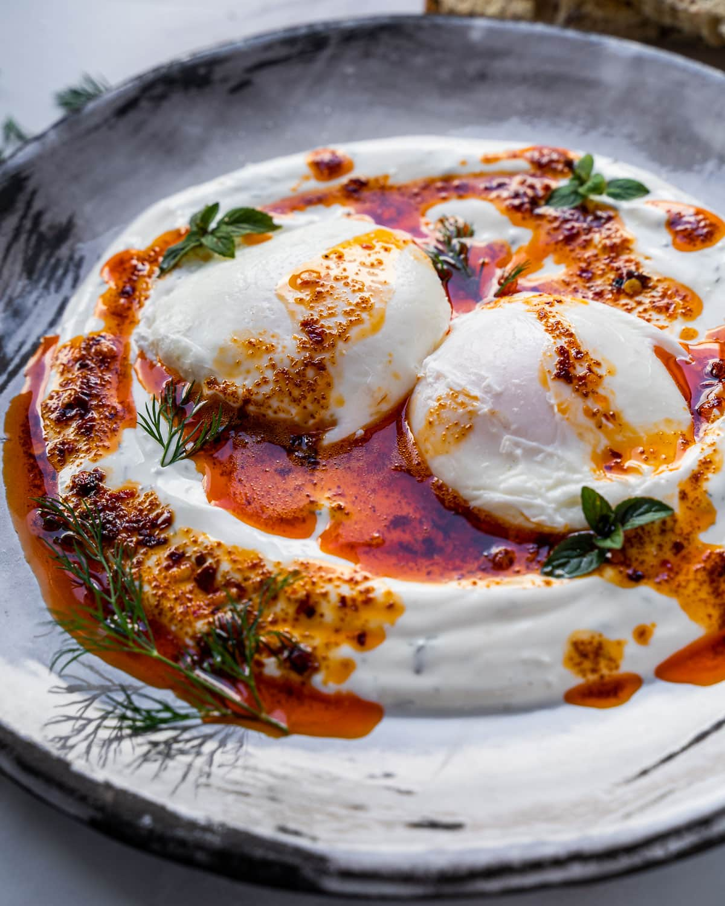

Turkish eggs

Turkish eggs
Sometimes for dinner, sometimes for breakfast.
Perfect meal to start your day or to end your day.
A sweet spicy juicy mixture of chili, butter, eggs and yogurt, what can go wrong ?
Ingredients:
- 2 eggs
- 1 tsp butter
- 200 g Low fat Greek Yoghurt
- 2 cloves of fresh garlic
- Dill weed, salt, pepper, chili flakes
- lemon or lime zest and juice
Steps:
- Pourt the Yoghurt in a bowl, crush in the garlic, add salt, pepper, chopped dill weed.
grate some lemon zest and squish some lemon juice in the mess. Mix it thoroughly
- Put water in a pot, salt it, bring it near boiling, then make a tornado in the pot with a spoon,
so its ready for making poached eggs.
Carefully crack in 1 egg at a time and let it curl together and cook through, so it looks
like a white ball
- put the eggs onto the yoghurt mix, salt and pepper them
- in another pot, start melting butter and add chili flakes (quantity depends on your preferred
level of spicyness)
cook it together on low heat so the butter doesnt burn untill the butter gets a red color from the flakes.
- Pour the juicy hot butter onto the dish and enjoy your food with some crispy bread
Sidenote:instead of poaching eggs, you can also fry them, but make sure the yolk is runny.
The dish is supposed to be so soft and juicy, cutlery isn't needed, you can eat it with bread in your hands
Return to home page